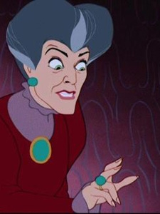

Cinderela

Uma jovem doce, gentil e sonhadora, mesmo diante das dificuldades. Vive como criada na própria casa, mas nunca perde a esperança de uma vida melhor. Seu coração puro e sua coragem fazem com que, com a ajuda da magia, ela transforme sua realidade e inspire todos ao seu redor.
Madrasta
Fria, controladora e vaidosa, é a mulher que casou com o pai de Cinderela e, após sua morte, a trata como serva. Protege suas próprias filhas e faz de tudo para impedir que Cinderela tenha qualquer chance de felicidade ou destaque.
Anastacia e Drizella
As filhas da madrasta. São mimadas, egoístas e invejosas. Tentam constantemente se sobressair às custas de Cinderela, mas não possuem o encanto e a doçura natural dela. Costumam ser usadas como alívio cômico pela sua falta de graça e exageros.
Fada Madrinha
A figura mágica que aparece no momento mais difícil de Cinderela, mostrando que com um pouco de fé e magia, sonhos podem sim se tornar realidade. É responsável por transformar a jovem em uma princesa por uma noite — com prazo até a meia-noite.
Principe
O herdeiro do trono que se apaixona por Cinderela no baile, sem saber sua verdadeira identidade. Representa o ideal romântico, mas também o desejo de encontrar alguém verdadeiro, além das aparências e da obrigação real.
Jaq e Tatá (Gus)
Os ratinhos amigos e fiéis de Cinderela. Engraçados, corajosos e leais, estão sempre dispostos a ajudá-la e proteger seu sonho. Muitas vezes, são os responsáveis por planos que salvam o dia.